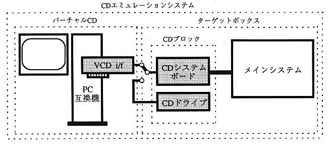

★PROGRAMMER'S GUIDE
★バーチャルCDシステム
★PROGRAMMER'S GUIDE
★バーチャルCDシステム
■ ｜
進む▼
バーチャルCDシステムユーザーズマニュアル
1.はじめに
■CDエミュレーションシステムの構成と機能概要
- 図-1にCD-ROMエミュレーションシステムの構成を示します。
図-1. システム構成

- CDエミュレーションシステム：
- バーチャルCDとターゲットボックスで構成されます。ソフトの動作をエミュレートしテストを行い、作成したライトワンスディスクを再生して動作を確認するシステムです。
- バーチャルCD(VCD)：
- CDエミュレーションシステムを構成する要素の一つで、CDブロックからのコマンドにより、ローカルのハードディスク上もしくはネットワーク上のMS-DOSファイルからデータを読みだし、エミュレーションを行います。ハードウエアとしてPC互換機とVCD I/Fボード、アプリケーションソフトウエアとしてのCDエミュレータで構成されます。
- CDブロック：
- CDエミュレーションシステムを構成する要素の一つで、バーチャルCDとメインシステムとの間に位置し、ターゲットボックスからの入力受け付け／PC互換機へのコマンド送信／PC互換機からのデータハンドリングなどを行うハードウエアおよびファームウエアを総称します。
- VCD I/Fボード：
- PC互換機の拡張スロットに挿入し、CDブロックとPC本体とのインタフェースを行います。
■このマニュアルについて
- このマニュアルは、バーチャルCDシステムのセットアップに関する説明とCDエミュレーションソフトウェアの説明の、二編で構成されています。
- セットアップ編にはPC互換機へのインストールの方法が記載されています。また、CDエミュレーションソフトウェア編にはエミュレーション作業を実行するために必要な手続きが記載されています。
- VCD I/FボードのPC互換機へのインストールに於ては、PC互換機に関する初歩的な知識を必要とします。また、CDエミュレーションソフトウェアの実行に際し、MS-DOSプログラム実行に関する知識と、CD-ROMの規格に関する初歩的な知識が必要です。
■ ｜
進む▼
★PROGRAMMER'S GUIDE
★バーチャルCDシステム
Copyright SEGA ENTERPRISES, LTD,. 1997